t_opticsImageFormation
Tutorial on optics and image formation
Date: 01.02.96 Duration: 45 minutes
Matlab 5: Checked 01.06.98, BW 01.07.99: Added IjSpeert calls, BW 01.12.01 Added new graphs for ijspeert curves and Williams et al. data, BW 01.18.03 Started integration with vCamera-2.0, minor changes. 01.02.08 Verified with local files for single download - BW 06.29.15 Don't use rad2deg and deg2rad as variable names, since these are Matlab functions.
NOTES: 1) This is a really nice tutorial and it runs. But it relies on data that are live under the scripts/optics directory. We need to decide how we're going to handle those .mat files, which are not in ISET data format. It would be nice to conver them to be so, and make the idiosyncratic data go away. (DHB)
Contents
- Initialize
- Visual Angle
- The viewing geometry
- In radians, the viewing angle, phi, satisfies tan(phi) = (opposite/adjacent).
- The Westheimer linespread function
- Another way to calculate and plot the Westheimer function
- Convolution of the image and linespread
- Defocus in the frequency domain
- What happens to cosinusoids at different spatial frequencies.
- Compare convolution and the Fourier Transform of the linespread function.
- Comparison of the pointspread and linespread
- Chromatic aberration: How the linespread varies with wavelength
- Chromatic aberration in the frequency domain
- More modern Linespreads, Pointspreads, and MTFs
- Comparison of the MTFs with the Williams data
- What does the pointspread function look like in 2D?
- End
Initialize
ieInit;
Visual Angle
To think about the effect of an image on the eye, we must specify the image in terms of degrees of visual angle. As an example for how to compute spacing in terms of degrees of visual angle, consider a printer whose dots are spaced (dots per inch)
dpi = 600
% Suppose we read the paper at a viewing distance (inches)
viewingDistance = 12
dpi =
600
viewingDistance =
12
The viewing geometry
vcNewGraphWin; line([0 viewingDistance 0 0],[0 0 1 0]); axis equal set(gca,'xlim',[-2 20]), grid on xlabel('Viewing Distance (inch)') ylabel('Position between spots on paper (inch)')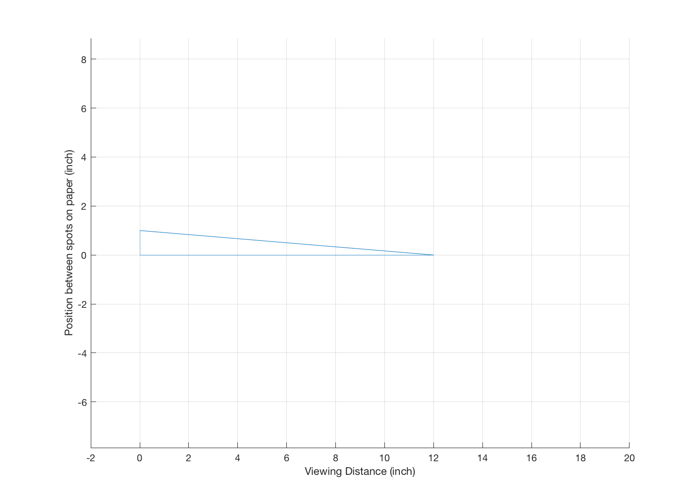
In radians, the viewing angle, phi, satisfies tan(phi) = (opposite/adjacent).
deg2radFactor = 2*pi/360; rad2degFactor = 360/(2*pi) phi = atan(1/viewingDistance)*rad2degFactor % There are 600 dots per inch, so that each dot occupies DegPerDot = phi/dpi % There are 60 min of visual angle per deg, MinPerDot = 60*DegPerDot % And 60 sec of visual angle per min, SecPerDot = 60*MinPerDot % As you will see later in the course, experiments have shown that people % can localize the position of a line to a spatial position of roughly 6 % sec of visual angle. Hence, at this viewing distance and with this many % dots per inch, the dot spacing is wider than the spacing that can be just % discriminated by the human eye.
rad2degFactor = 57.295779513082323 phi = 4.763641690726177 DegPerDot = 0.007939402817877 MinPerDot = 0.476364169072618 SecPerDot = 28.581850144357066
The Westheimer linespread function
Westheimer calculated that the linespread function of the human eye, specified in terms of minutes of arc and using a 3mm pupil, should be approximated using the following formula
LineSpread = 0.47*exp(-3.3 *(x.^2)) + 0.53*exp(-0.93*abs(x));
% Suppose we wish to plot the function by defining the spatial % variable, x, in terms of seconds of arc, xSec = -300:1:300; xMin = xSec/60; ls = 0.47*exp(-3.3 *(xMin.^2)) + 0.53*exp(-0.93*abs(xMin)); ls = ls / sum(ls); vcNewGraphWin; plot(xSec,ls) set(gca,'xlim',[-240 240],'xtick',(-240:60:240)), grid on xlabel('Arc sec'), ylabel('Responsivity'), title('Westheimer Linespread') % From our previous calculation, we observed that the dots in a 600 dpi % printer, viewed at 12 inches, are spaced 28.5819 sec of visual angle % apart. At this distance, the linespread has fallen to about one-half of % its peak value. % Hence, if we could control the intensity and color of the printed dots -- % which we cannot do on conventional laser printers -- then at this viewing % distance we would be able to produce images that were very realistic in % their appearance.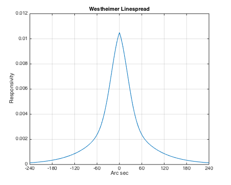
Another way to calculate and plot the Westheimer function
xSec = -300:300; % 600 sec, total = 10 min westheimerOTF = abs(fft(westheimerLSF(xSec))); % One cycle spans 10 min of arc, so freq=1 is 6 c/deg freq = [0:11]*6; vcNewGraphWin; semilogy(freq,westheimerOTF([1:12])); grid on; xlabel('Freq (cpd)'); ylabel('Relative contrast'); set(gca,'ylim',[-.1 1.1])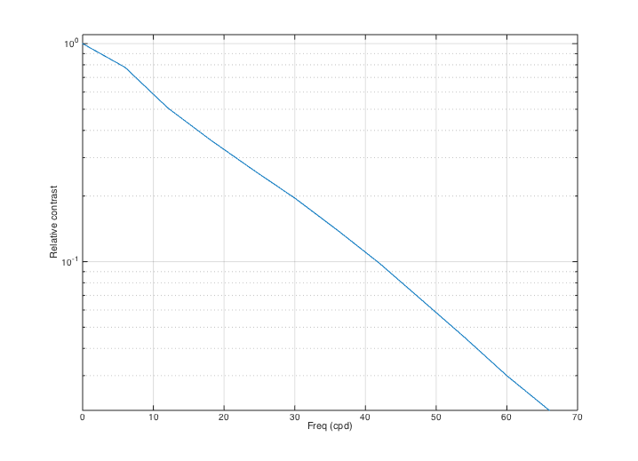
Convolution of the image and linespread
We can estimate the visual image created by an image printed at 600 dpi using the following simple convolution calculation. Let's create an image that spans 0.2 deg and has a dot every 30 sec. (i.e., roughly 28.58)
dotSpacing = 30; secPerDeg = 60*60; x = 1:0.2*secPerDeg; im = zeros(1,length(x)); im(1:dotSpacing:length(im)) = ones(size(im(1:dotSpacing:length(im)))); % Here is an image showing the sampled line positions % (The lines represent a printer dot) % % It is not immediately clear why the call to imshow throws a negative % axis warning. The plot looks fine. So we just switch off the warning to % avoid reducing the confidence of the user about the quality of our code. vcNewGraphWin; S = warning('off','MATLAB:Axes:NegativeLimitsInLogAxis'); imshow(im(ones(1,128),1:512)) warning(S); title('Image of line stimulus'); % Each line in the physical image adds a unit linespread to the retinal % image. We can compute the retinal image by forming the convolution of % the image with the Westheimer linespread function. Remember: we sampled % the linespread once every sec of arc. So, we can simply convolve the % image and the linespread function now as: retIm = conv2(ls,im,'full'); vcNewGraphWin; plot(retIm),grid on title('The one-dimensional retinal image') xlabel('Sec of arc'), ylabel('Image intensity') % (If the colors in the image look funny, make sure to place your % cursor inside the window. This may change the local color % map). % While the original image varies from black to white, after blurring by % the eye's optics, there is only a small amount of residual variation in % the retinal image. Because of the blurring, the retinal image is much % more likely the image of a bar than it is the image of a set of % individual lines. % In fact, the dots placed on the page are not perfect line samples. Each % ink line has some width. So, a more realistic input image might be % created by blurring the stimulus and then convolving with the linespread. gKernel = fspecial('gaussian',[1,30],2); % This produces a little Gaussian window for filtering blurIm = conv2(im,gKernel,'full'); blurIm = ieScale(blurIm,1,32); retIm = conv2(blurIm,ls,'full'); vcNewGraphWin; imshow(blurIm(ones(1,128),1:512),[]); title('Image of line stimulus blurred by ink width'); % Notice the very small ripples left in the curve after taking % into account the blurring by the physical display and by the % eye. vcNewGraphWin; plot(retIm), axis square, grid on title('Retinal image of blurred lines') xlabel('Sec of arc'), ylabel('Intensity') % The question you might ask yourself now is this: will those % small ripples be detectable by the observers? How can we tell? % You might also ask what will happen when we view the page at 6 % inches, or at 24 inches. What if we increase the printer % resolution to 1200 dpi? What if we introduce some ability to % modulate the density of the ink and hence the light scattered % back to the eye?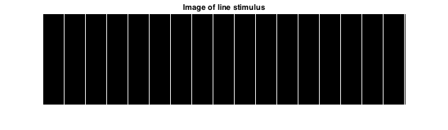 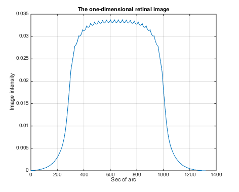 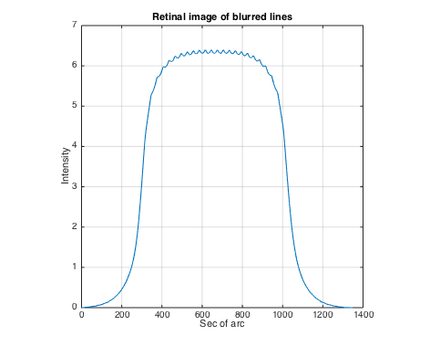
Defocus in the frequency domain
First, make a new linespread function that is smaller and easier to compute with. Have it extend over 1 deg (60 min) so the Fourier Transform is easier to interpret
xMin = -30:1:29; ls = 0.47*exp(-3.3 *(xMin.^2)) + 0.53*exp(-0.93*abs(xMin)); ls = ls / sum(ls); vcNewGraphWin; plot(xMin,ls), grid on xlabel('Min of arc'),ylabel('Linespread value') % Now, consider the retinal image that is formed by some simple % harmonic functions. Here is a sinusoid that varies at 1 cycle % per degree of visual angle. nSamples = length(xMin); f = 1; harmonic = cos(2*pi*f*xMin/nSamples); vcNewGraphWin; plot(xMin,harmonic), grid on title('Sampled cosinusoid') xlabel('Arc sec'), ylabel('Intensity')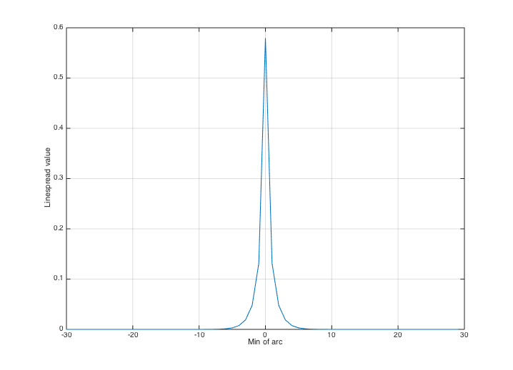 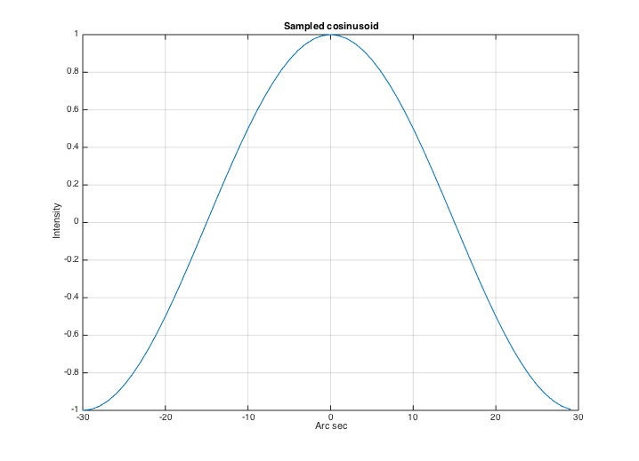
What happens to cosinusoids at different spatial frequencies.
Notice that the amplitude of the cosinusoid falls off as the spatial frequency increases. We will store the amplitude of the cosinusoid in the variable "peak".
vcNewGraphWin; freq =[1 5 10 15]; peak = zeros(1,length(freq)); for i = 1:length(freq) harmonic = cos(2*pi*freq(i)*xMin/nSamples); retIm = convolvecirc(harmonic,ls); subplot(2,2,i) plot(retIm), grid on, set(gca,'ylim',[-1 1],'xlim',[0 64]); xlabel('Arc sec') peak(i) = max(retIm(:)) end % We can plot the amplitude of the retinal cosinusoid, and its % amplitude decreases with the input frequency. I also use the % fact that at f = 0 the amplitude = 1 (because the area under % the linespread is 1). vcNewGraphWin; plot([0 freq],[1 peak],'-') set(gca,'ylim',[0 1]) xlabel('Spatial freq (cpd)'), ylabel('Transfer') grid on
peak =
Columns 1 through 3
0.991643632485555 0 0
Column 4
0
peak =
Columns 1 through 3
0.991643632485555 0.838932018430419 0
Column 4
0
peak =
Columns 1 through 3
0.991643632485555 0.838932018430419 0.623187003057830
Column 4
0
peak =
Columns 1 through 3
0.991643632485555 0.838932018430419 0.623187003057830
Column 4
0.496806481741752
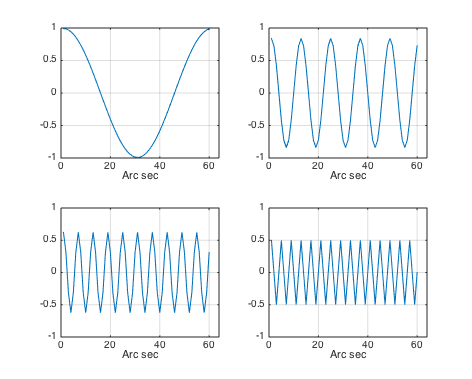 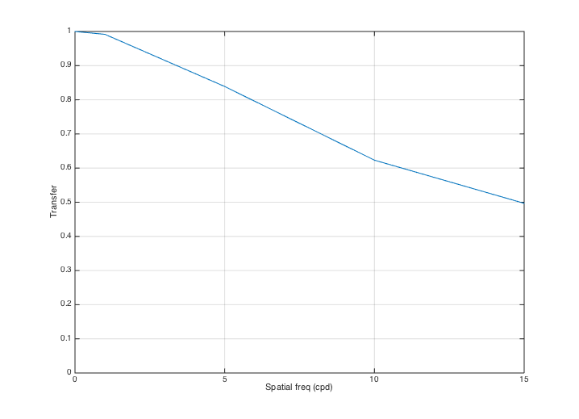 Compare convolution and the Fourier Transform of the linespread function.
% Remember, the linespread was built so that it spans 1 deg, hence % frequency is in cycles per degree. mtf = abs(fft(ls)); hold on, plot(freq,mtf(freq + 1),'ro'); hold off % The values we obtain from convolution are plotted as solid line, % whereas the amplitude of the Fourier Transform of the linespread % function is plotted as a red circles at each frequency. % The functions match, which should give you some intuition about % what the amplitude of the Fourier Transform represents.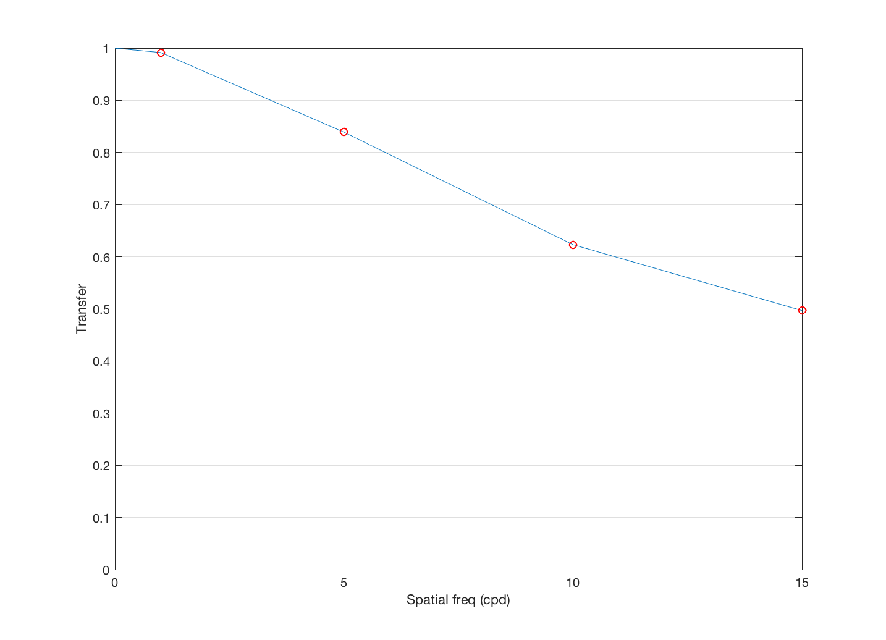
Comparison of the pointspread and linespread
% When working with two-dimensional inputs, we must consider the % pointspread function, that is the response to an input that is % a point of light. A standard formula for the cross-section of % the pointspread function of the human eye for a 3mm pupil is % also provided by Westheimer. We can compare the linespread and % the cross-section of the pointspread in the following graphs. xSec = -300:300; xMin = xSec/60; ls = 0.47*exp(-3.3 *(xMin.^2)) + 0.53*exp(-0.93*abs(xMin)); ps = 0.952*exp(-2.59*abs(xMin).^1.36) + 0.048*exp(-2.43*abs(xMin).^1.74); vcNewGraphWin; p = plot(xSec,ps,'r-',xSec,ls,'b--'); grid on set(gca,'xlim',[-180 180]) xlabel('Arc sec'), ylabel('LS or PS amplitude') legend(p,'Pointspread','Linespread') % Next, we can create a graph of the pointspread. First, create % a matrix whose entries are the distance from the origin xSec = -240:10:240; xMin = xSec/60; X = xMin(ones(1,length(xMin)),:); Y = X'; D = X.^2 + Y.^2; D = D.^0.5; % If you want to see the distance from the origin, you might show % this image: colormap(gray(32)),imagesc(D), axis image % Then, compute the pointspread function and make a picture of it ps = 0.952*exp(-2.59*abs(D).^1.36) + 0.048*exp(-2.43*abs(D).^1.74); vcNewGraphWin; colormap(cool(64)), mesh(ps) % To see the pointspread as an image, rather than as a mesh plot, % you might make this figure: colormap(gray(32)),imagesc(ps), axis image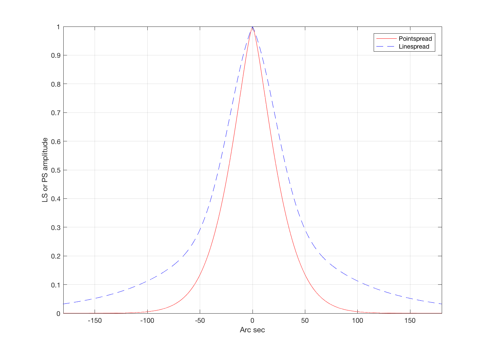 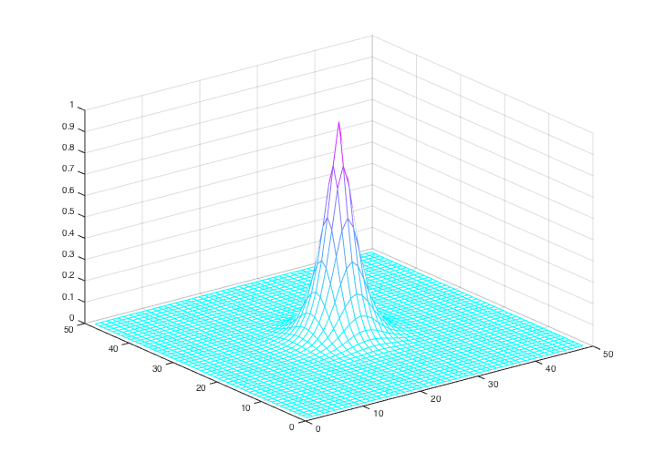
Chromatic aberration: How the linespread varies with wavelength
The linespread varies quite strongly with wavelength. When the eye is in good focus at 580 nm (yellow-part of the spectrum) the light in the short-wavelength (400-450nm) is blurred quite strongly and light in the long-wavelength part of the spectrum is blurred, too, though somewhat less. We can calculate the linespread as a function of wavelength (Marimont and Wandell, 1993) from basic principles. The linespreads a various wavelengths are contained in the data file:
oi = oiCreate('human'); oi = oiSet(oi,'wavelength',370:730); lsf = oiPlot(oi,'ls wavelength'); xDim = lsf.x; lineSpread = lsf.lsWave; wave = lsf.wavelength; % We select three wavelengths and plot their linespread functions % together. Notice that for the shorter wavelength, the % linespread function is much more spread-out than for the middle % and long wavelengths. vcNewGraphWin; plot(xDim, lineSpread(80, :), 'b-', xDim, lineSpread(200,:), ... 'g:', xDim, lineSpread(361, :), 'r--' ); legend('wavelength 450', 'wavelength 570','wavelength 730'); xlabel('Degrees'); ylabel('Image Intensity'); title('Linespread functions for three wavelengths'); % Look at the line spread functions for all wavelengths lw = 1:10:length(wave); vcNewGraphWin; colormap(hot(32)); mesh(xDim, wave(lw), lineSpread(lw,:)); set(gca,'xlim',[-1 1],'ylim',[350 730]) ylabel('wavelength (nm)'); xlabel('degrees'); zlabel('intensity'); % Different wavelength components of an image are blurred to % different extents by the eye. We use a set of lines again as % an example. For this computation, we will assume that the % input begins with equal energy at all wavelengths from 370 to % 730 nm. % Here, we create and display the image of sample lines. im = reshape([0 0 0 1 0 0 0 0]' * ones(1, 16), 1, 128); imshow(im(ones(100,1), 1:128)); % To calculate the retinal image for this pattern, we % convolve each wavelength component of the image with the % appropriate linespread function. The routine conv2 takes the % input image (im, size(im) = 1 128) and convolves it with each % of the linespread functions in lineSpread size(lineSpread = % 361,65). This results in 361 images (one for each % wavelength). retIm = conv2(im, lineSpread, 'full'); % We must remember the size (in deg) of each sample point this way. % X = (-size(retIm,2)/2 : ((size(retIm, 2)/2) - 1)) / 64; % We can plot the retinal image corresponding to two wavelengths % this way. vcNewGraphWin; subplot(2,1,1) plot(X,retIm(201,:),'g-') set(gca,'ylim',[0 0.5]) title(sprintf('Retinal Image for %d nm', wave(201))); grid on subplot(2,1,2) plot(X,retIm(51,:),'b-') set(gca,'ylim',[0 0.5]) title(sprintf('Retinal Image for %d nm', wave(51))); grid on % Notice that the two images have the same mean, they only differ % in terms of the contrast: the green image has a lot more % contrast, but the same mean. mean(retIm(50,:),2) mean(retIm(200,:),2) % The short wavelength (420 nm) component is blurred much more than % the longer wavelength component of the image. Hence, the image % has very low amplitude ripples, and appears almost like a % single, uniform bar. The 570nm component, however, has high % amplitude ripples that are quite distinct. Hence, the % short-wavelength variation would be very hard to detect in the % retinal image, while the 570 nm component would be quite easy % to detect.
ans = 0.091101879397098 ans = 0.090110466977327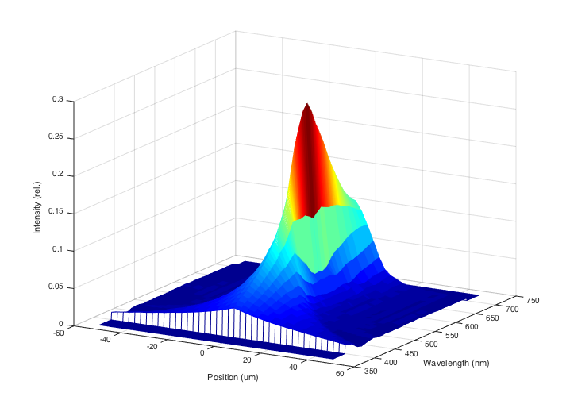 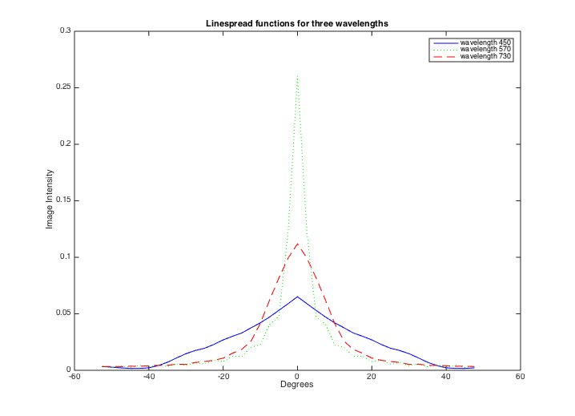 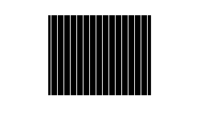 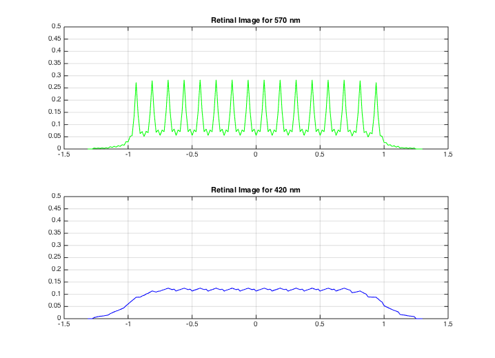
Chromatic aberration in the frequency domain
% Finally, let's make a few graphs of the modulation transfer % function of the eye's optical system for individual % wavelengths. For short wavelength lights, high spatial % frequency contrast is attenuated a lot by the optical path of % the eye. % OLD % Load the MTFs for wavelengths from 370-730nm. These were % calculated using the methods in Marimont and Wandell that are % in a script in the /local/class/psych221/tutorials/chromAb sub-directory. % load combinedOtf; % OLD cOTF = oiPlot(oi,'otf wavelength'); sampleSf = cOTF.fSupport; combinedOtf = cOTF.otf; % Here is a graph of a few of the MTFs vcNewGraphWin; plot(sampleSf, combinedOtf(:,81), 'b-', ... sampleSf, combinedOtf(:,201), ... 'g:', sampleSf, combinedOtf(:,361), 'r--' ); legend('wavelength 450', 'wavelength 570','wavelength 730'); xlabel('Frequency (CPD)'); ylabel('Scale factor'); grid on title('Modulation transfer functions for 3 wavelengths'); % Notice that the amplitude of the short-wavelength becomes % negative. This occurs because the blurring is so severe that % the harmonic function is reproduced in the opposite phase % compared to the input harmonic. Hence, the amplitude is % represented by a negative number. This was illustrated in % class using the slide projector, and the phenomenon is called % "spurious resolution."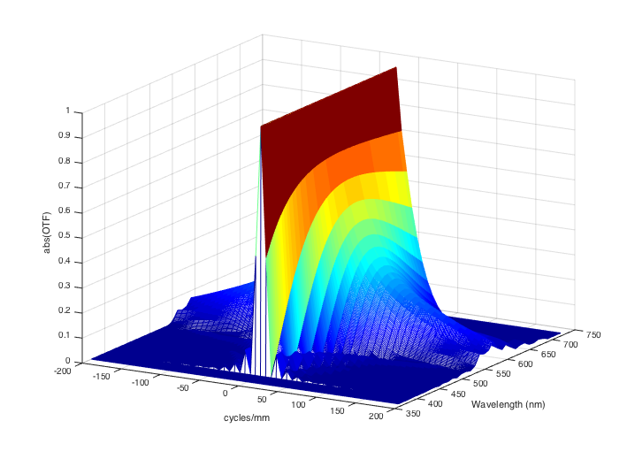 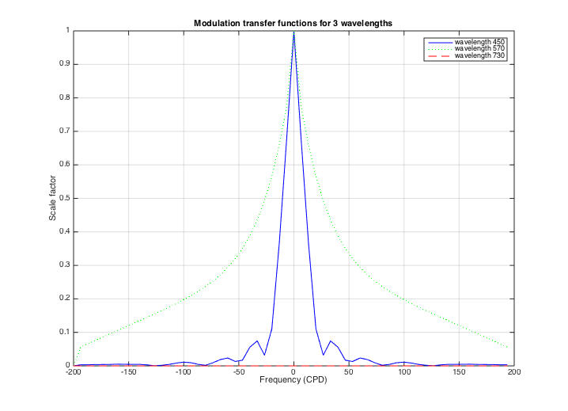
More modern Linespreads, Pointspreads, and MTFs
In recent years, Ijspeert and others in the Netherlands developed a more extensive set of functions to predict the basic image formation variables in the average human eye. The curves they derived were based on empirical inspection of data sets, and do not have any strong theoretical foundation. Still, they are probably more accurate than the Westheimer function and they are parameterized for the subject's age, pigmentation, and pupil diameter. Hence, for practical computation, these are probably more useful.
% A student in Psych 221 developed the code to compute these % values in the function "ijspeert." Here is an example age = 20; % Subject's age pupil = 1.5; % diameter in mm pigmentation = 0.142; % Caucasian freqIndexRange = 1:50; % The spatial frequency range % Set the span to be 1 deg, so we know that 1 cycle in the MTF % corresponds to 1 cycle per deg angleInDeg = (-.25:.005:.25); angleInSec = angleInDeg*3600; angleInRad = angleInDeg*deg2radFactor; [iMTF, iPSF, iLSF] = ijspeert(age, pupil, pigmentation, ... freqIndexRange, angleInRad); % The functions should be normalized so that the area under the % linespread and the first value of the MTF are one. iMTF = iMTF/iMTF(1); iLSF = iLSF/sum(iLSF); % These are the modulation transfer function and linespread % for the ijspeert data vcNewGraphWin; %clf subplot(1,2,1), plot(iMTF); grid on set(gca,'xtick',(0:10:80),'xlim',[0 80]); xlabel('Spatial frequency (cpd)'); ylabel('Amplitude'); title('MTF') % Here is the linespread function subplot(1,2,2), plot(angleInSec,iLSF); grid on xlabel('Position (sec)'); ylabel('Intensity'); set(gca,'xtick',(-500:250:500),'xlim',[-500 500]); title('Line spread') % We can compare the ijspeert and westheimer linespread functions xMin = angleInSec/60; ls = 0.47*exp(-3.3 *(xMin.^2)) + 0.53*exp(-0.93*abs(xMin)); ls = ls / sum(ls); westMTF = abs(fft(ls)); clf subplot(1,2,1) plot(angleInSec/60,iLSF,'b-',angleInSec/60,ls,'r-') set(gca,'xtick',(-8:2:8),'xlim',[-6 6]); xlabel('Position (min)'), ylabel('Intensity'), title('Linespread') grid on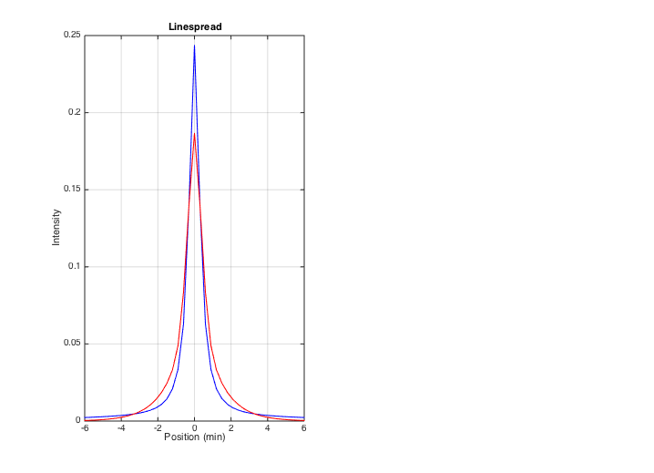
Comparison of the MTFs with the Williams data
load williams subplot(1,2,2) n = length(iMTF); freq = 0:(n-1); plot(freq,iMTF(1:n),'b-',freq,westMTF(1:n),'r-') hold on plot(dataF,dhb,'ro',dataF,drw,'go',dataF,rnb,'bo') xlabel('Spatial frequency (cpd)'), ylabel('Amplitude'), title('MTF') set(gca,'ylim',[0 1]) grid on hold off legend('Ijspeert','Westheimer','Data')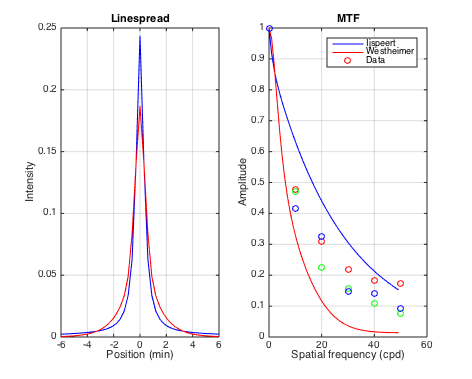
What does the pointspread function look like in 2D?
% The PSF is circularly symmetric. So, we can accumulate % the 1D values into a 2D surface. % angleInRad2D = linspace(min(angleInRad)/4,max(angleInRad)/4,length(angleInRad)/4); nSamples = length(angleInRad2D); [X,Y] = meshgrid(angleInRad2D,angleInRad2D); % Because the pointspread function is symmetric, we can calculate the value by % building a matrix D that measures only the distance from the center of matrix. % Try plotting this distance matrix using the command: % % imagesc(D); colorbar; axis image D = sqrt(X.^2 + Y.^2); % Now, loop through the rows of D to calculate the pointspread values % as a function of angle. iPSF2D = zeros(size(D)); for ii=1:nSamples a = D(ii,:); [iMTF, iPSF2D(ii,:)] = ijspeert(age, pupil, pigmentation, ... freqIndexRange, a); end vcNewGraphWin; colormap(cool(64)); surf(angleInRad2D,angleInRad2D,iPSF2D);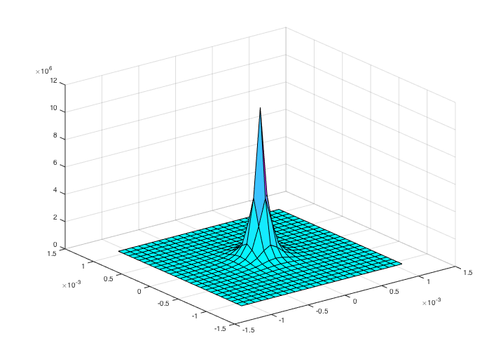